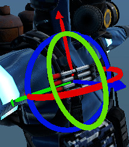

Module: common_editor
Documentation last edited: October 22, 2025 at 10:46 UTC
Description

Модуль для общих инструментов разработки редакторов. На данный момент включает:
- Gizmos, которые используются как модулями
comics_renderer
, так и
character_builder
- UI свойств, пригодный для редактирования материалов или других потенциальных целей
Добавление поддержки gizmos в твой редактор
- Инстанциируй следующие сцены в сцене твоего редактора:
"res://modules/common_editor/assets/prefabs/position.tscn"
"res://modules/common_editor/assets/prefabs/rotation.tscn"
Затем, в твоём главном скрипте редактора (я предполагаю, он назначен на корневой узел):
Украсть и забыть
# Узел gizmo вращения, который появляется, когда ты можешь что-то вращать
onready var rotation_gizmo = $rotation
# Узел gizmo позиции, который показывается, когда ты можешь перемещать что-то
onready var position_gizmo = $position
# Массив всех выбранных hitbodies
var selected =
[]
# Эта переменная используется для более точной проверки текущего выбранного body.
# Она может на деле не хранить текущий, так что тебе лучше использовать selected
[0]
var selected_body = null
# Пользователь directly сейчас что-то выбирает? Используется для исправления выделения
var is_selecting = false
# Количество кадров, в которых пользователь ещё ничего не выбрал
# Используется для исправления выделения
var nothing_selected_frames = 0
# Принудительное выделение определённого объекта. phys_body должен иметь скрипт hit_body
# привязанный к нему
func force_selection(phys_body):
select_node_process(phys_body, true)
# Возвращает словарь рейкаста проверки. Он отправляет луч под курсором.
func get_camera_ray():
var camera = MainCamera.get_camera()
if not is_instance_valid(camera):
return null
var mouse_pos = get_viewport().get_mouse_position()
var from = camera.project_ray_origin(mouse_pos)
var to = from + camera.project_ray_normal(mouse_pos) * 100.0
var space_state = get_world().get_direct_space_state()
var ray = space_state.intersect_ray(from, to)
return ray
# Дополнительная проверка выделения для исправления несогласованности выделения.
# Всегда проверяет, есть ли какой-либо объект под курсором, и если есть,
# сбрасывает nothing_selected_frames и устанавливает selected_body.
# Вызывается каждый физический кадр.
func check_node_selection_ray():
var ray = get_camera_ray()
if not ray:
nothing_selected_frames += 1
return
if not ray.collider:
nothing_selected_frames += 1
return
nothing_selected_frames = 0
selected_body = ray.collider
# Я украл это дерьмо из Comics Renderer и теперь я даже не уверен, что
# блять оно здесь делает. Ладно, раньше оно делало какую-то общую логику
# выделения здесь, но оно было заменено тем ебанутым исправлением выделения, которое я сделал.
# Оно всё ещё используется в одном случае, когда счётчик nothing_selected_frames выше 10.
# Я не знаю почему, и я не хочу знать почему, и я не собираюсь это менять.
func select_node(unselect_previous = true):
var ray = get_camera_ray()
if not ray:
selected.clear()
position_gizmo.reset_selection()
rotation_gizmo.reset_selection()
return
if not ray.collider:
return
select_node_process(ray.collider, unselect_previous)
# Обрабатывает логику выделения целевого body, используется исправлением выделения вместо select_node.
# Проверяет как HIT_BODY "CommonEditorBody", используемый gizmos.
func select_node_process(body, unselect_previous = true):
if not is_instance_valid(body):
return
var hit_body = \
HitBodyTool.get_node_property(body, "CommonEditorBody")
if hit_body:
select_hit_body(hit_body, unselect_previous)
# Выделить hit_body, просто как дважды два
func select_hit_body(hit_body, unselect_previous = true):
if hit_body.is_selected:
rotation_gizmo.remove_selected(hit_body)
position_gizmo.remove_selected(hit_body)
hit_body.unselect_node()
selected.erase(hit_body)
return
if unselect_previous and not hit_body.dont_deselect_others:
for select_body in selected:
select_body.unselect_node()
rotation_gizmo.reset_selection()
position_gizmo.reset_selection()
selected =
[]
if hit_body.can_be_rotated:
rotation_gizmo.add_selected(hit_body)
if hit_body.can_be_positioned:
position_gizmo.add_selected(hit_body)
hit_body.select_node()
selected.append(hit_body)
# Снять выделение с hit_body
func unselect_hit_body(hit_body):
if hit_body.is_selected:
position_gizmo.remove_selected(hit_body)
rotation_gizmo.remove_selected(hit_body)
hit_body.unselect_node()
selected.erase(hit_body)
# Функция ввода, просто проверяет, выбирает ли пользователь что-либо
func _input(event):
if event is InputEventMouseButton:
if in_UI:
return
if event.button_index == 1 and event.pressed:
is_selecting = true
# Обновление физического кадра для проверки следующих вещей:
# - Если nothing_selected_frames больше 10, нет selected_body
# - Если пользователь что-то выбирает, запустит логику выделения
func _physics_process(delta):
if nothing_selected_frames >
10:
selected_body = null
check_node_selection_ray()
if is_selecting:
is_selecting = false
var keep = Input.is_key_pressed(KEY_SHIFT) or \
Input.is_key_pressed(KEY_CONTROL)
if nothing_selected_frames >
10:
select_node(not keep)
else:
select_node_process(selected_body, not keep)
Всё этого кода должно быть достаточно для добавления поддержки gizmos в твой главный скрипт редактора, ОДНАКО, тебе нужно добавить эту поддержку и твоим редактируемым объектам тоже.
Поддержка Common Editor HitBody
# Ссылка на скрипт hit body, используемый для выделения и взаимодействия
const HIT_BODY = preload(
"res://modules/common_editor/src/common_editor_hit_body.gd")
hit_body = HIT_BODY.new()
hit_body.real_node = self
hit_body.can_be_rotated = true
hit_body.can_be_positioned = true
hit_body.can_be_removed = true
var size = get_aabb().get_longest_axis_size()
hit_body.rotation_scale = size * 0.8
hit_body.position_scale = size * 0.8
HitBodyTool.add_node_property(static_body, HIT_BODY.OBJECT_NAME, hit_body)
И этого НЕ enough для твоего поддерживаемого объекта, чтобы перемещаться! Если ты хочешь, чтобы он перемещался, добавь этот сниппет:
# Обрабатывает операции вращения из ввода
# axis: Вектор оси вращения
# value: Количество вращения
func on_rotate(axis: Vector3, value: float):
var og_axis = axis
var bone_rot = value * 0.005
if slow_edit:
bone_rot *= 0.2
rotate_object_local(axis, bone_rot)
rot_data.vec3 = rotation_degrees
# Обрабатывает операции смещения позиции из ввода
# offset: Вектор трансляции
func on_offset(offset: Vector3):
if slow_edit:
offset *= 0.1
global_transform.origin += offset
pos_data.vec3 = position
HitBody Common Editor вызывает следующие методы в
real_node
:
on_select # Вызывается при выделении
on_unselect # Вызывается при снятии выделения
on_rotate # Вызывается при вращении
on_rotate # Вызывается при смещении позиции
Это могло бы быть проще, но мы любим стрелять себе в ноги, верно? :)
General Information
Root directories list
assets, docs, src
Nodes
vbox_fill_x
properties
editor_rotation_axis
material_property
editor_rotation
editor_position_axis
editor_position
Classes
common_editor_hit_body
CE_PropertiesData
Resources
None
Other Scripts
None